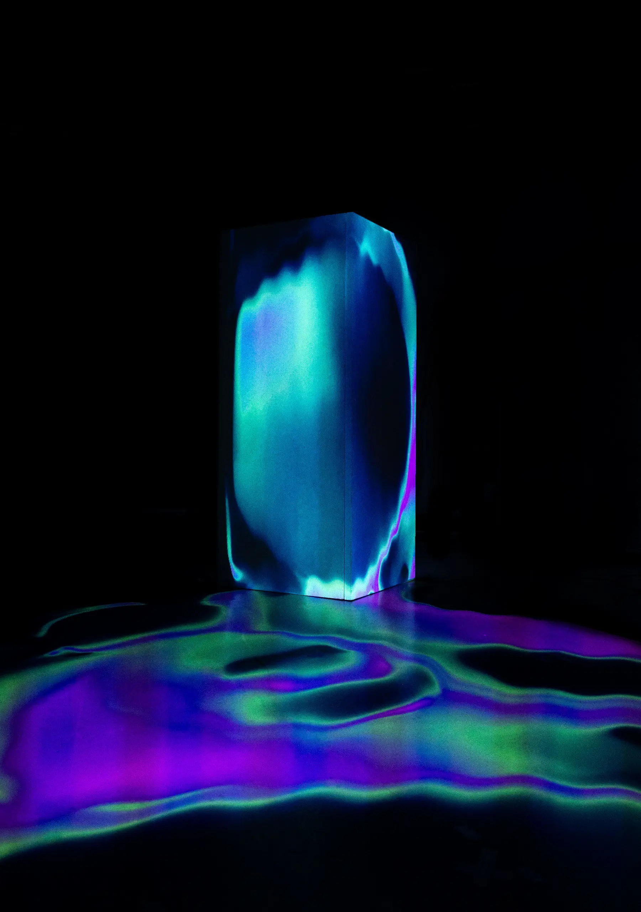

Dream of me
Audiovisual Performance
We will flirt, slowly approach each other, touch each other gently, kiss passionately, get lost in each other, feel passionate and alive, and then just
dream. Dream of Me combines experimental sounds with dynamic visuals and takes you on an immersive journey into the depths of a sensual
world.
- Audiovisual performance
- Sensual Dreams
- Projection Mapping
Type
Course Project
Technologies
After Effects, MadMapper
Credits
Concept and Visuals: Jonas Wolter, Eliya Maria Pagelli, Simon Müller
Contemporary Music: Nadine Speziga, Juan Contreras, Flora Karetka
